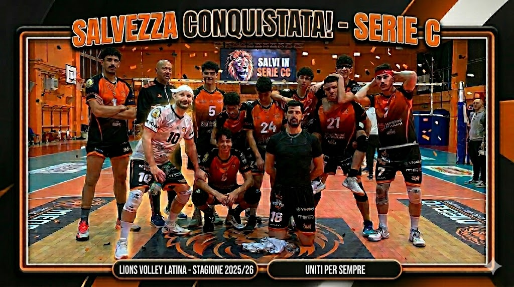

Missione compiuta: i Lions restano in Serie C!

L'esultanza dei ragazzi dopo l'ultima vittoria decisiva
È stata una stagione di sofferenza, sudore e determinazione, ma alla fine il verdetto è arrivato: la Lions Volley Latina giocherà in Serie C anche l'anno prossimo! Grazie alla vittoria nell'ultima giornata, abbiamo blindato la categoria, dimostrando il valore del nostro gruppo.
Nonostante gli infortuni e alcune partite stregate, la squadra non ha mai smesso di crederci. Il sostegno del pubblico al PalaLions è stato il "settimo uomo" in campo, spingendoci oltre i nostri limiti nei momenti più critici del campionato.
"Sapevamo che sarebbe stata dura, ma questi ragazzi hanno un cuore immenso. Dedichiamo questa salvezza a tutta la città." - Il Capitano
I numeri della stagione
Una salvezza meritata, costruita punto su punto soprattutto nelle mura amiche:
- Grinta: 5 vittorie pesantissime al tie-break.
- Solidità: Una delle migliori difese del girone di ritorno.
- Gioventù: Tre esordi assoluti in categoria per i nostri ragazzi.
Ora è il momento di festeggiare, ma la dirigenza è già al lavoro per programmare il futuro. L'obiettivo per il prossimo anno? Alzare ancora di più l'asticella e continuare a ruggire nel massimo campionato regionale.